Terrain Data Preparation and DEM Merging with QGIS
Turn-in for grading: This lab includes material that must be turned in for grading. Complete the required deliverables and submit them as instructed by the course.
Overview
This lab introduces a basic raster workflow for preparing and combining elevation data.
You will work with two digital elevation models of the same Minnesota landscape:
- a higher-resolution
3 meterDEM that covers only the valley bottom - a lower-resolution
9 meterDEM that covers the larger surrounding area
The goal is to combine them into one merged DEM that preserves the finer detail where it exists while still covering the full landscape.
To do that, you will:
- inspect the two DEMs and compare their coverage
- create hillshades to compare detail visually
- replace
NoDatacells in the high-resolution DEM - resample the coarser DEM to match the finer grid
- merge the two DEMs using a conditional evaluation
- style the final terrain surface for map output
Concept note: Raster analysis often depends on matching cell size, extent, and valid-data coverage before layers can be combined meaningfully. A merge workflow is not just about stacking files together. It is about making their grids compatible.
What You Should Understand After This Lab
By the end of this exercise, you should be able to explain:
- why rasters must often be aligned before they can be merged
- why
NoDatahandling matters in raster analysis - why resampling was required before the conditional merge
- how conditional evaluation can be used to combine two DEMs with different coverage
Getting Ready
You will need:
- TerrainLabData01.zip
- WhiteboxTools installed in QGIS
Install WhiteboxTools if needed
This workflow uses both native QGIS raster tools and WhiteboxTools.
- Confirm that WhiteboxTools is installed and available in the Processing Toolbox.
- If you are on macOS and WhiteboxTools is blocked the first time it runs, you may need to allow it in System Settings > Privacy & Security.
Workflow note: WhiteboxTools is especially useful in this course because it offers a broader and often clearer set of terrain-analysis tools than QGIS alone.
Download and unpack the data
- Download TerrainLabData01.zip.
- Unzip it somewhere stable on your computer.
- Create a project folder for this lab.
- Save a new QGIS project in that folder as
terrain_merge.qgz.
Data for This Exercise
The main raster layers are:
valley3.tifvalley9.tif
Both are DEMs of the same general area, but they differ in resolution and coverage.
All elevation values are in meters, and both rasters are in the same projected coordinate system. The important difference is their cell size and spatial extent.
Part 1: Add the DEMs and Compare Their Extent
- Add
valley3.tifandvalley9.tifto QGIS. - If QGIS prompts you about coordinate transformations, accept the default.
- Arrange the layers so
valley3is on top. - Toggle the layers on and off to compare their extents.
- Turn off
valley9temporarily and inspect the footprint ofvalley3. - Use Identify Features on the
valley3raster. - Click both inside and outside the visible valley area to compare valid elevation cells with
NoDatacells.
Concept note: The higher-resolution DEM does not cover the whole study area. That incomplete coverage is why the merge is needed.
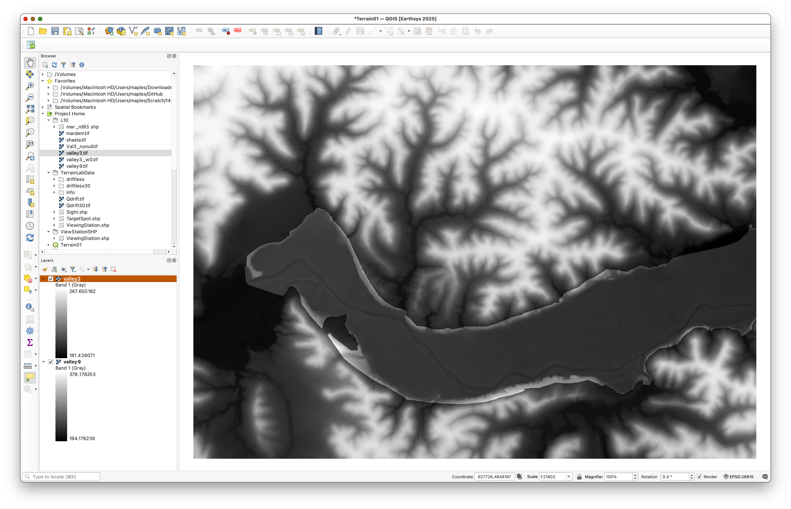
With valley9 turned off, the valley3 footprint should appear as a more limited, winding patch of higher-resolution terrain:
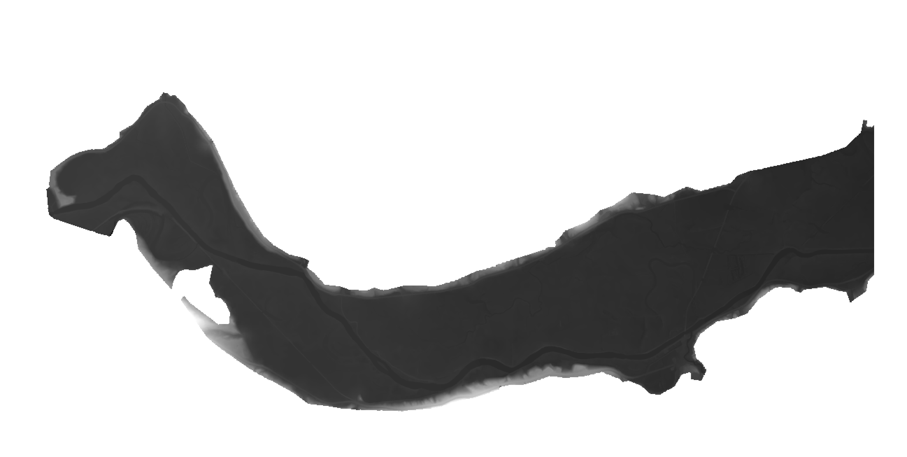
When you use the identify tool, cells outside the real valley3 coverage should report NoData:
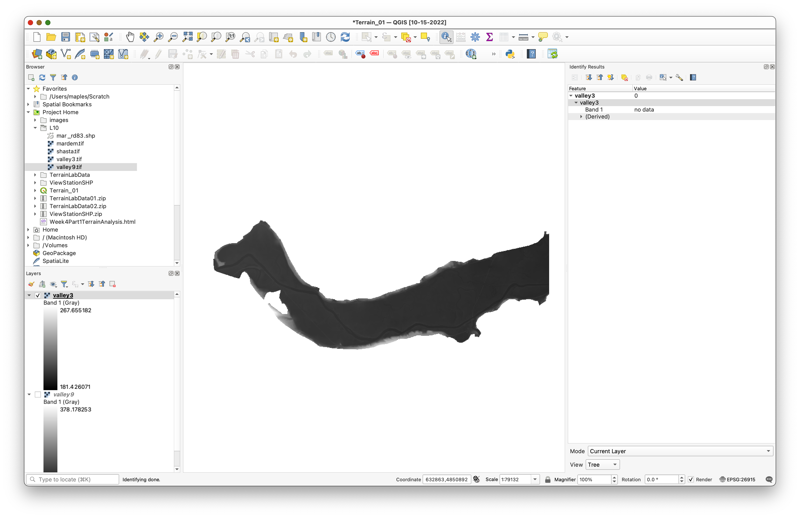
Part 2: Create Hillshades to Compare Detail
Hillshades make differences in terrain detail easier to see.
- Open the Processing Toolbox and search for Hillshade.
- Run the hillshade tool for
valley3with:- Azimuth:
315 - Vertical angle:
25 - Z factor:
1
- Azimuth:
- Save the output as
hillshade3.tif. - Repeat the same process for
valley9. - Save the second output as
hillshade9.tif. - Place
hillshade3abovehillshade9and compare the terrain detail at different scales.
Concept note: Hillshade is a visualization derived from elevation, not a new measurement of terrain. It is useful here because it makes the resolution difference between the two DEMs easier to interpret visually.
Use settings like these for valley3:
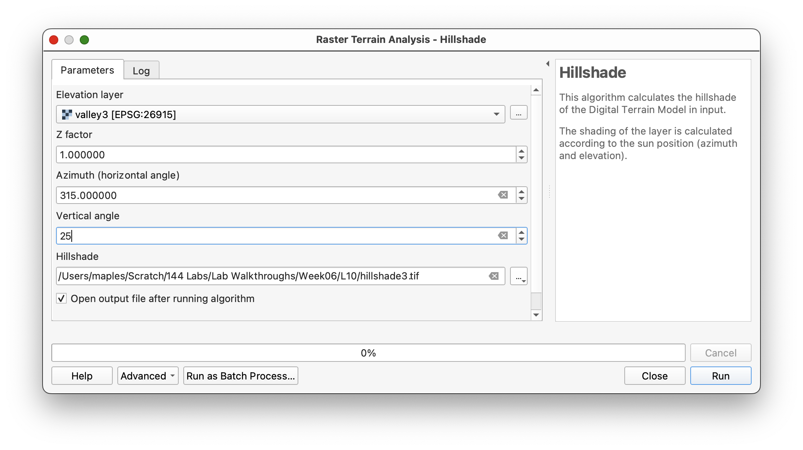
Then repeat for valley9:
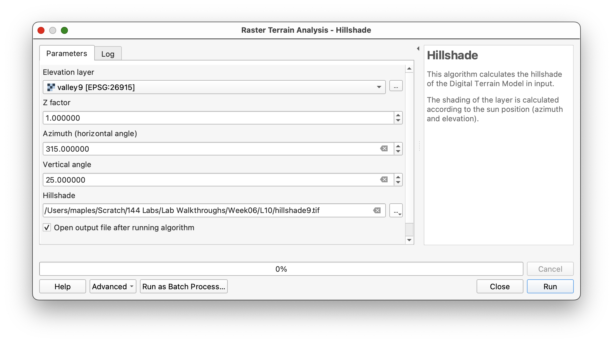
Place hillshade3 above hillshade9:
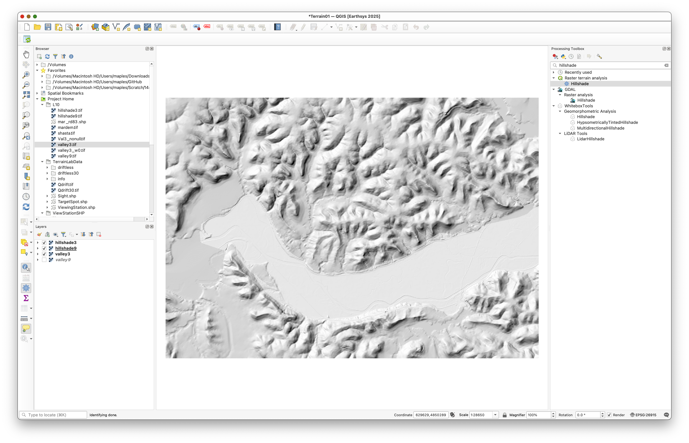
As you zoom in and out, you should be able to see the finer terrain detail preserved in the higher-resolution layer:
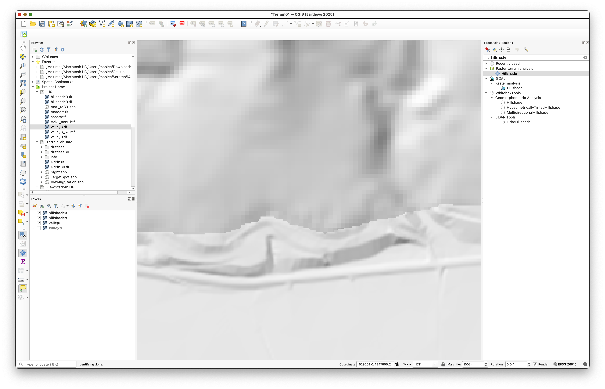
Part 3: Replace NoData in the High-Resolution DEM
Before combining the DEMs, convert the NoData cells in the high-resolution raster to zeros.
- In the Processing Toolbox, search for a NoData filling tool.
- Use Fill NoData cells or the closest equivalent available in your QGIS installation.
- Use
valley3as the input raster. - Set the fill value to
0. - Save the output as
valley3nonull.tif.
Inspect the output and confirm that the previously transparent NoData area is now filled with 0.
Concept note: Many raster operations return
NoDatawhenever any input cell isNoData. Converting the missing area to a known placeholder value lets you use a conditional rule later to decide where the high-resolution raster should and should not be used.
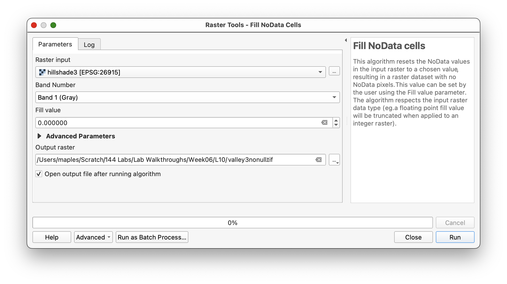
The output should look different from the original because the background that used to be transparent is now filled with 0 values:
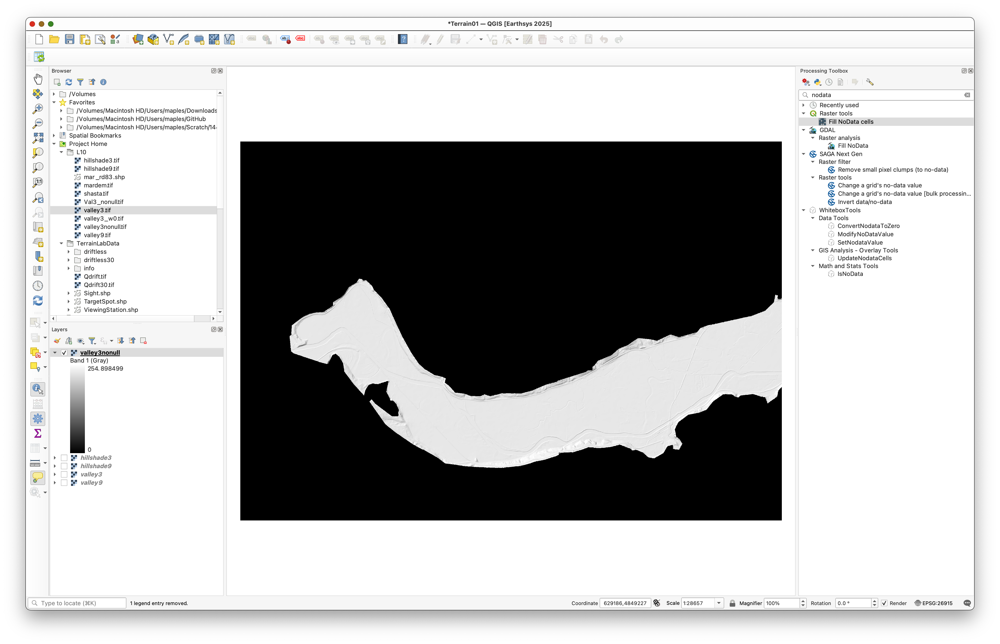
Part 4: Resample the Coarser DEM to Match the Finer Grid
Now make the 9 meter DEM match the cell size of the 3 meter DEM.
- In the Processing Toolbox, search for Resample under WhiteboxTools.
- Use
valley9as the input raster. - Use
valley3nonullas the base raster or template layer. - Choose Nearest Neighbor as the resampling method.
- Save the output as
valley9_3m.tif. - Run the tool.
- Open Layer Properties > Information for the new raster and verify that the pixel size is
3by3meters.
Concept note: Nearest-neighbor resampling preserves the original elevation values from the coarse DEM. It does not invent smoother intermediate values; it simply fits the original values into a finer grid structure.
When selecting the input file in WhiteboxTools, use the file picker to choose valley9:
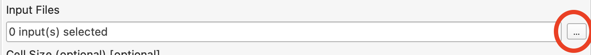
Use valley3nonull as the base raster and nn for the resample method:
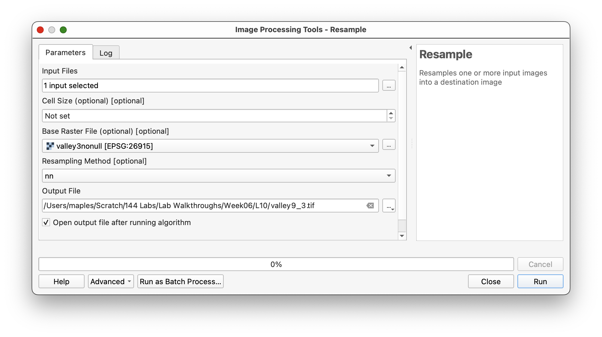
Then check the output layer information to confirm the new pixel size:
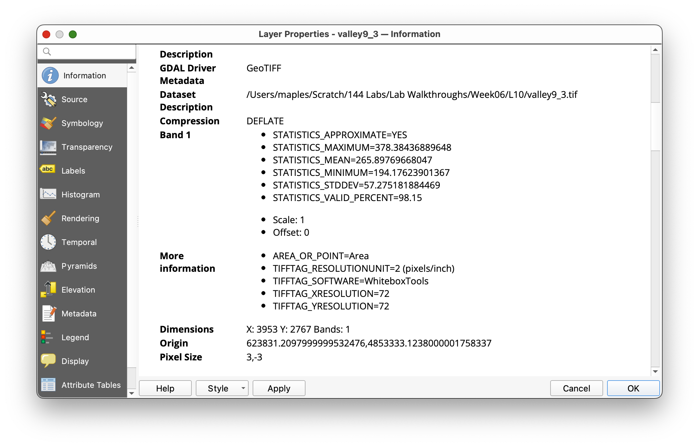
Part 5: Merge the DEMs with Conditional Evaluation
Now combine the two rasters so the fine DEM is used where it has real data, and the resampled coarse DEM is used everywhere else.
Mac note: In the WhiteboxTools suite, ConditionalEvaluation runs as a separate executable. On macOS, the first time this specific tool runs, macOS may block it and QGIS may report an error. If that happens, open System Settings > Privacy & Security, as you did in the Week 00 setup, find the blocked WhiteboxTools message, click Allow Anyway, and then run ConditionalEvaluation again.
- Search for ConditionalEvaluation in WhiteboxTools.
- Set:
- Input raster:
valley3nonull - Conditional statement:
value != 0 - Value where TRUE:
valley3 - Value where FALSE:
valley9_3m
- Input raster:
- Save the output as
valley_merged.tif. - Run the tool.
This logic means:
- if the high-resolution raster has a real elevation value, keep it
- if it has
0from the filled background area, use the resampled coarse DEM instead
Concept note: This is a simple raster map-algebra decision rule. It uses the raster cell value itself to determine which source raster contributes to the final merged DEM.
Use settings like these:
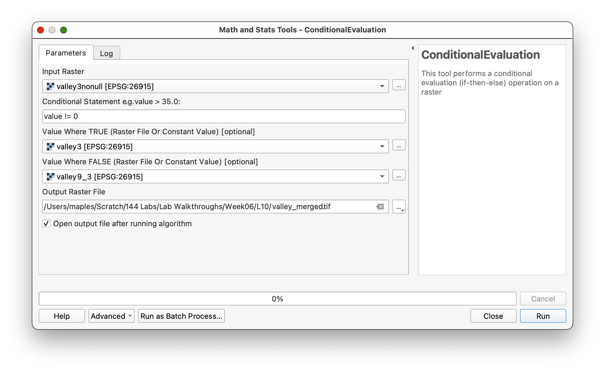
Part 6: Create and Inspect a Hillshade of the Merged DEM
- Run the Hillshade tool again using
valley_mergedas the elevation layer. - Save the output as
hillshade_merged.tif. - Compare the merged hillshade to the earlier hillshades.
You should see:
- finer terrain detail in the valley bottom
- coarser detail in the surrounding uplands
- possibly a visible seam where the two datasets meet
Workflow note: Some checkerboard-like visual patterning may appear depending on zoom scale and display resampling. That is partly a display issue and partly a reminder that the merged DEM contains information from rasters with different original resolutions.
You should see a merged terrain surface with finer detail in the valley bottom and coarser detail in the uplands:
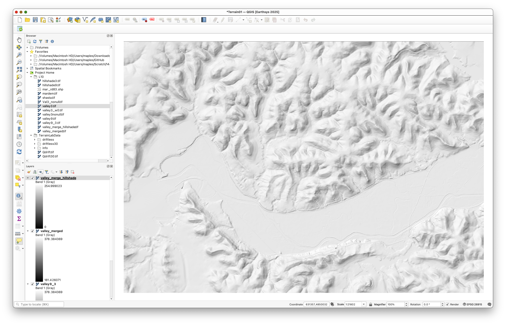
If checkerboard patterning is distracting, adjust the display resampling in layer properties or styling:
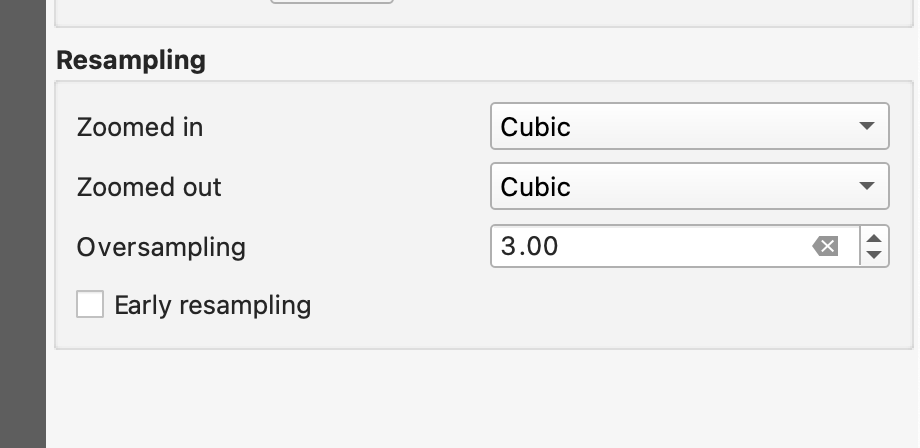
Part 7: Style the Final DEM for Terrain Visualization
- Place
valley_mergedabove its hillshade layer. - Open the Layer Styling panel for
valley_merged. - Use:
- Singleband pseudocolor
- Linear interpolation
- a continuous color ramp of your choice
- Click Classify if needed.
- Set the DEM layer's Blending mode to
Multiply.
This should allow the hillshade beneath the DEM to contribute subtle topographic shadows while the DEM color ramp provides elevation values.
Concept note: A colored DEM and a hillshade often work well together because the color communicates elevation categories while the hillshade communicates shape and relief.
Use settings similar to these as a starting point:
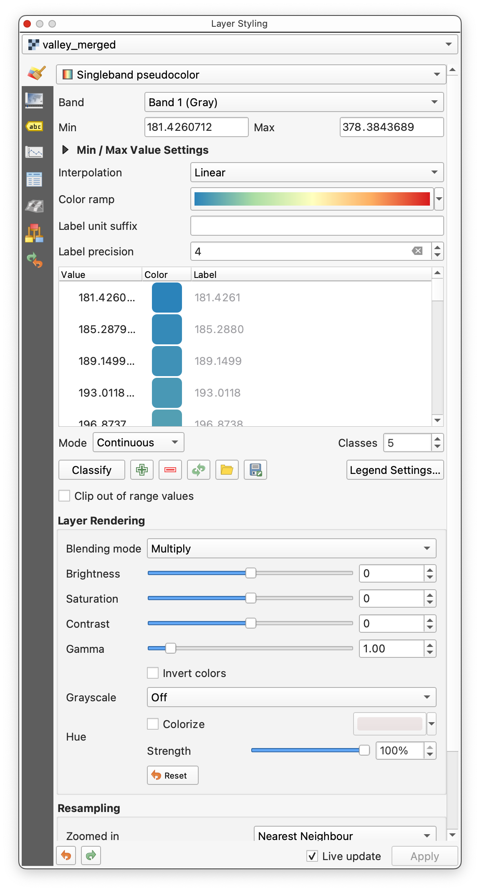
The result should allow the hillshade to enrich the colored DEM:
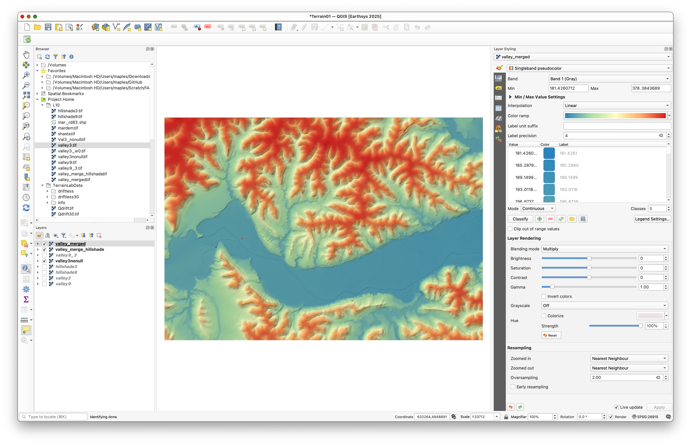
Deliverable
Create and export a final layout of the merged terrain surface.
Include: